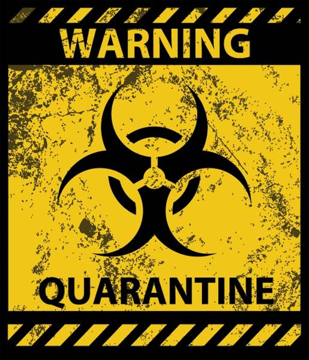

¿Qué es?

La cuarentena, en medicina, es un término para describir el aislamiento de personas o animales durante un período de tiempo no específico como método para evitar o limitar el riesgo de que se extienda una enfermedad, o una plaga.
La palabra cuarentena proviene de Quaranta giorni en italiano, que a su vez proviene de la palabra quadraginta en latín y que traduce como cuatro veces diez, con origen religioso y que se empezó a usar con el sentido médico del término con el aislamiento de 40 días que se le hacía a las personas y bienes sospechosos de portar la peste bubónica durante la pandemia de peste negra en Venecia en el siglo XIV.
¿Qué hacer?
La aplicación de una cuarentena a un determinado grupo de personas, quiere decir que estos pueden estar en peligro de contagio o estan contagiados, por lo cual al momento de aplicar la cuarentena e incluso antes se deben tomar ciertas medidas para evitar la propagación del patogeno.
Limitar el contacto frente a frente con otras personas es la mejor forma de reducir la propagación de la enfermedad
del coronavirus 2019.
¿Qué es el distanciamiento social?
El distanciamiento social, también llamado "distanciamiento físico", significa mantener un espacio entre usted y las demás personas fuera de su casa. Para practicar el distanciamiento social o físico:
- Mantengase a 6 pies de distancia de las demas personas
- No se reuna en grupos
- Aléje de lugares muy concurridos